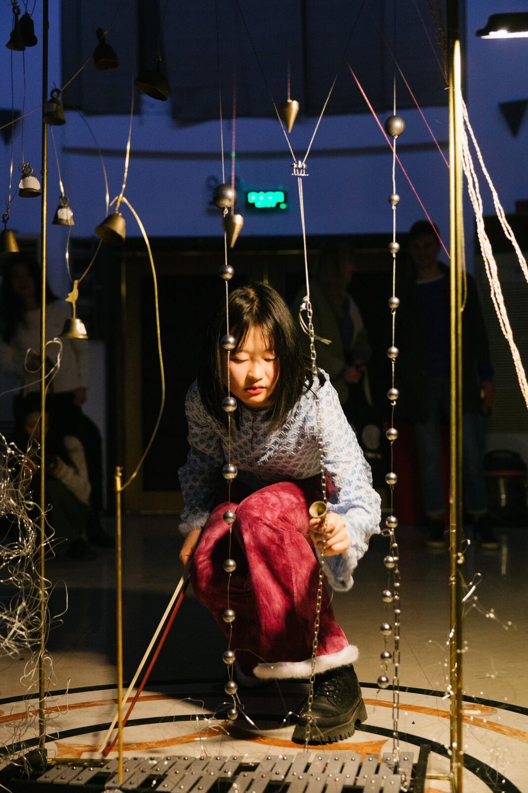
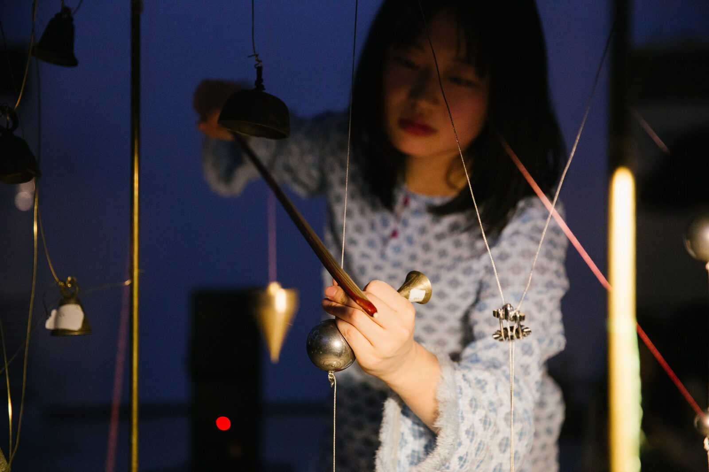
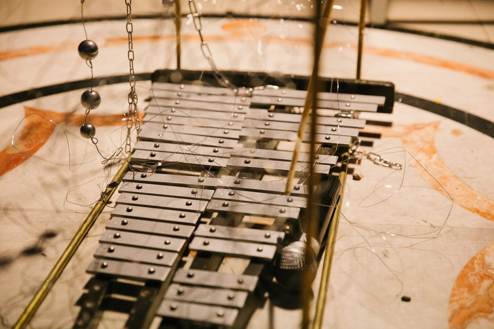
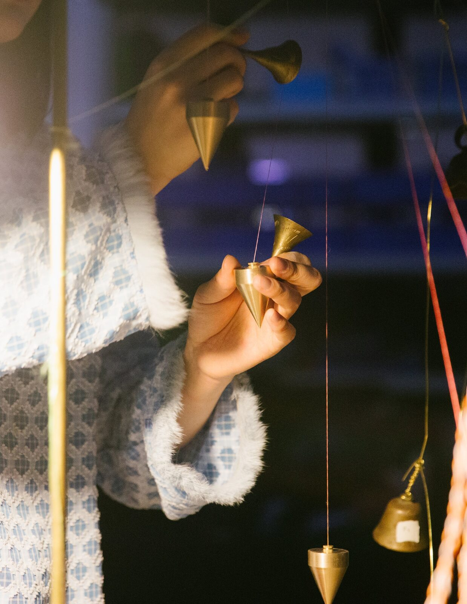
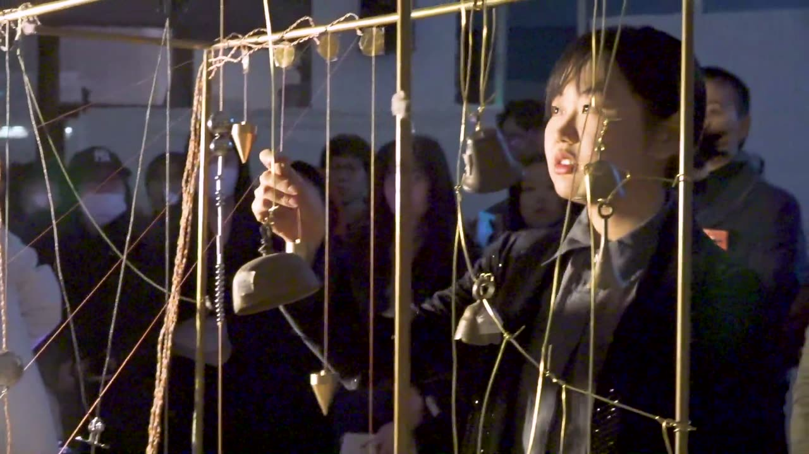

Chaosmose
Chaosmose
1. PubPub Link
https://nime.pubpub.org/pub/ni5hbb4q/draft?access=vpu50hgc
2.Conference Abstraction
A musical instrument as well as a sculpture. It reveals my mixed feelings lately through both itself, the making process and live performance. It is in a forever state of flux. Different elements flow, none of which prevails the others. Motivations mix with each other to break their own structures and complete chaosmose.
3.Program Description
It’s a complex musical instrument which makes chaotic organizations or organizable chaos. It contains different sounding bodies and by playing the instrument, different elements flow and mix with each other to break their own structures and complete chaosmose.


This piece reveals my mixed feelings lately. At the beginning, only some thoughts nothing personal about myself - something dualistic: tonal and atonal, science and occult. Then with a lot of personal emotions permeating into it, plus me reading Guattari’s Chaosmose, these things are gradually divorced from duality.
About life, study and friends, about a little orange cat, thinkings, emotions, being unsure, being touched, shallow and ordinary, private or not. It has many themes, it’s plural and free growing, it’s never finished. Everthing is unscripted. None of the elements prevails the others - all they do is to forever flow, mix with each other, mix with noise and side branches. Motivations are mixed to break their own structures and complete chaosmose.
The instrument contains two types of string - mulberry silk thread and steel wire rope; two types of percussion - bells and xylophone; electronic music (Ableton and MAX/MSP). So the player can pluck, bow, knock or beat the piece. Piezo pickups are attached to the strings to collect vibration signals sending to computer.
About the string part, I firstly tested several different threads, strings and ropes and chose the mulberry silk thread and steel wire rope. Silk thread can produce the most subtle and versatile sound while the steel wire’s tone is very thick and abundant. By sticking some piezo pickups onto the strings, it collects vibration signals into both Ableton and MAX/MSP. In Ableton, it processes the signals using some LFO triggered effects like Delay, Gate, filters and Resonators to eliminate noise as well as add some colors to the string sound. But generally the sound is not that heavily processed so that it can keep its original timbre. In MAX/MSP, it detects the pitch using a retune~ object and make notes based on the detected pitch. For the percussion, I put a xylophone in the bottom of the instrument. When the pendent swing, it will knock onto the xylophone. The suspension would even randomly fall onto the xylophone due to the instability of the whole system. I also freely hang bells onto it. During the performance, I invited another player, Chai, who took control of Ableton. He would turn on or turn off some of the audio input or whether the audio goes into MAX/MSP. He also made some music in Ableton during the performance. All the parts become one of the elements, flows or branches of the entire piece.







4. Media

▶5. ACKNOWLEDGEMENTS
The author would like to thank all the members in the DIY NIME Club Shanghai for all kinds of emotional support.
This work is supported by Mingze Chai (Damien) who gave me a lot of technical support.